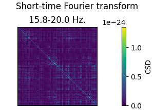
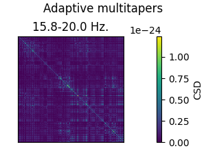
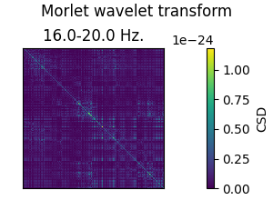

Note
Go to the end to download the full example code.
Compute a cross-spectral density (CSD) matrix#
A cross-spectral density (CSD) matrix is similar to a covariance matrix, but in the time-frequency domain. It is the first step towards computing sensor-to-sensor coherence or a DICS beamformer.
This script demonstrates the three methods that MNE-Python provides to compute the CSD:
Using short-term Fourier transform:
mne.time_frequency.csd_fourier()Using a multitaper approach:
mne.time_frequency.csd_multitaper()Using Morlet wavelets:
mne.time_frequency.csd_morlet()
# Author: Marijn van Vliet <w.m.vanvliet@gmail.com>
# License: BSD-3-Clause
# Copyright the MNE-Python contributors.
import mne
from mne.datasets import sample
from mne.time_frequency import csd_fourier, csd_morlet, csd_multitaper
print(__doc__)
In the following example, the computation of the CSD matrices can be
performed using multiple cores. Set n_jobs to a value >1 to select the
number of cores to use.
n_jobs = 1
Loading the sample dataset.
data_path = sample.data_path()
meg_path = data_path / "MEG" / "sample"
fname_raw = meg_path / "sample_audvis_raw.fif"
fname_event = meg_path / "sample_audvis_raw-eve.fif"
raw = mne.io.read_raw_fif(fname_raw)
events = mne.read_events(fname_event)
Opening raw data file /home/circleci/mne_data/MNE-sample-data/MEG/sample/sample_audvis_raw.fif...
Read a total of 3 projection items:
PCA-v1 (1 x 102) idle
PCA-v2 (1 x 102) idle
PCA-v3 (1 x 102) idle
Range : 25800 ... 192599 = 42.956 ... 320.670 secs
Ready.
By default, CSD matrices are computed using all MEG/EEG channels. When interpreting a CSD matrix with mixed sensor types, be aware that the measurement units, and thus the scalings, differ across sensors. In this example, for speed and clarity, we select a single channel type: gradiometers.
picks = mne.pick_types(raw.info, meg="grad")
# Make some epochs, based on events with trigger code 1
epochs = mne.Epochs(
raw,
events,
event_id=1,
tmin=-0.2,
tmax=1,
picks=picks,
baseline=(None, 0),
reject=dict(grad=4000e-13),
preload=True,
)
Not setting metadata
72 matching events found
Setting baseline interval to [-0.19979521315838786, 0.0] s
Applying baseline correction (mode: mean)
0 projection items activated
Loading data for 72 events and 722 original time points ...
0 bad epochs dropped
Computing CSD matrices using short-term Fourier transform and (adaptive) multitapers is straightforward:
csd_fft = csd_fourier(epochs, fmin=15, fmax=20, n_jobs=n_jobs)
csd_mt = csd_multitaper(epochs, fmin=15, fmax=20, adaptive=True, n_jobs=n_jobs)
Computing cross-spectral density from epochs...
0%| | CSD epoch blocks : 0/72 [00:00<?, ?it/s]
1%|▏ | CSD epoch blocks : 1/72 [00:00<00:01, 46.59it/s]
3%|▎ | CSD epoch blocks : 2/72 [00:00<00:01, 48.29it/s]
4%|▍ | CSD epoch blocks : 3/72 [00:00<00:01, 49.35it/s]
6%|▌ | CSD epoch blocks : 4/72 [00:00<00:01, 50.17it/s]
7%|▋ | CSD epoch blocks : 5/72 [00:00<00:01, 50.10it/s]
8%|▊ | CSD epoch blocks : 6/72 [00:00<00:01, 49.88it/s]
10%|▉ | CSD epoch blocks : 7/72 [00:00<00:01, 49.79it/s]
11%|█ | CSD epoch blocks : 8/72 [00:00<00:01, 50.12it/s]
12%|█▎ | CSD epoch blocks : 9/72 [00:00<00:01, 50.68it/s]
14%|█▍ | CSD epoch blocks : 10/72 [00:00<00:01, 51.06it/s]
15%|█▌ | CSD epoch blocks : 11/72 [00:00<00:01, 50.75it/s]
17%|█▋ | CSD epoch blocks : 12/72 [00:00<00:01, 50.45it/s]
18%|█▊ | CSD epoch blocks : 13/72 [00:00<00:01, 50.58it/s]
19%|█▉ | CSD epoch blocks : 14/72 [00:00<00:01, 50.71it/s]
21%|██ | CSD epoch blocks : 15/72 [00:00<00:01, 50.94it/s]
22%|██▏ | CSD epoch blocks : 16/72 [00:00<00:01, 50.89it/s]
24%|██▎ | CSD epoch blocks : 17/72 [00:00<00:01, 50.69it/s]
25%|██▌ | CSD epoch blocks : 18/72 [00:00<00:01, 50.85it/s]
26%|██▋ | CSD epoch blocks : 19/72 [00:00<00:01, 50.84it/s]
28%|██▊ | CSD epoch blocks : 20/72 [00:00<00:01, 50.87it/s]
29%|██▉ | CSD epoch blocks : 21/72 [00:00<00:01, 50.91it/s]
31%|███ | CSD epoch blocks : 22/72 [00:00<00:00, 50.79it/s]
32%|███▏ | CSD epoch blocks : 23/72 [00:00<00:00, 50.66it/s]
33%|███▎ | CSD epoch blocks : 24/72 [00:00<00:00, 50.66it/s]
35%|███▍ | CSD epoch blocks : 25/72 [00:00<00:00, 50.93it/s]
36%|███▌ | CSD epoch blocks : 26/72 [00:00<00:00, 50.98it/s]
38%|███▊ | CSD epoch blocks : 27/72 [00:00<00:00, 51.01it/s]
39%|███▉ | CSD epoch blocks : 28/72 [00:00<00:00, 51.10it/s]
40%|████ | CSD epoch blocks : 29/72 [00:00<00:00, 50.99it/s]
42%|████▏ | CSD epoch blocks : 30/72 [00:00<00:00, 50.97it/s]
43%|████▎ | CSD epoch blocks : 31/72 [00:00<00:00, 50.94it/s]
44%|████▍ | CSD epoch blocks : 32/72 [00:00<00:00, 51.03it/s]
46%|████▌ | CSD epoch blocks : 33/72 [00:00<00:00, 51.09it/s]
47%|████▋ | CSD epoch blocks : 34/72 [00:00<00:00, 50.64it/s]
49%|████▊ | CSD epoch blocks : 35/72 [00:00<00:00, 50.44it/s]
50%|█████ | CSD epoch blocks : 36/72 [00:00<00:00, 50.57it/s]
51%|█████▏ | CSD epoch blocks : 37/72 [00:00<00:00, 50.72it/s]
53%|█████▎ | CSD epoch blocks : 38/72 [00:00<00:00, 50.64it/s]
54%|█████▍ | CSD epoch blocks : 39/72 [00:00<00:00, 50.62it/s]
56%|█████▌ | CSD epoch blocks : 40/72 [00:00<00:00, 50.53it/s]
57%|█████▋ | CSD epoch blocks : 41/72 [00:00<00:00, 50.44it/s]
58%|█████▊ | CSD epoch blocks : 42/72 [00:00<00:00, 50.45it/s]
60%|█████▉ | CSD epoch blocks : 43/72 [00:00<00:00, 50.58it/s]
61%|██████ | CSD epoch blocks : 44/72 [00:00<00:00, 50.27it/s]
62%|██████▎ | CSD epoch blocks : 45/72 [00:00<00:00, 48.28it/s]
64%|██████▍ | CSD epoch blocks : 46/72 [00:00<00:00, 48.10it/s]
65%|██████▌ | CSD epoch blocks : 47/72 [00:00<00:00, 48.28it/s]
67%|██████▋ | CSD epoch blocks : 48/72 [00:00<00:00, 48.50it/s]
68%|██████▊ | CSD epoch blocks : 49/72 [00:00<00:00, 48.67it/s]
69%|██████▉ | CSD epoch blocks : 50/72 [00:01<00:00, 48.83it/s]
71%|███████ | CSD epoch blocks : 51/72 [00:01<00:00, 48.83it/s]
72%|███████▏ | CSD epoch blocks : 52/72 [00:01<00:00, 49.00it/s]
74%|███████▎ | CSD epoch blocks : 53/72 [00:01<00:00, 49.26it/s]
75%|███████▌ | CSD epoch blocks : 54/72 [00:01<00:00, 49.49it/s]
76%|███████▋ | CSD epoch blocks : 55/72 [00:01<00:00, 49.69it/s]
78%|███████▊ | CSD epoch blocks : 56/72 [00:01<00:00, 49.61it/s]
79%|███████▉ | CSD epoch blocks : 57/72 [00:01<00:00, 49.77it/s]
81%|████████ | CSD epoch blocks : 58/72 [00:01<00:00, 50.11it/s]
82%|████████▏ | CSD epoch blocks : 59/72 [00:01<00:00, 50.54it/s]
83%|████████▎ | CSD epoch blocks : 60/72 [00:01<00:00, 49.55it/s]
85%|████████▍ | CSD epoch blocks : 61/72 [00:01<00:00, 49.81it/s]
86%|████████▌ | CSD epoch blocks : 62/72 [00:01<00:00, 49.92it/s]
88%|████████▊ | CSD epoch blocks : 63/72 [00:01<00:00, 50.03it/s]
89%|████████▉ | CSD epoch blocks : 64/72 [00:01<00:00, 50.06it/s]
90%|█████████ | CSD epoch blocks : 65/72 [00:01<00:00, 50.17it/s]
92%|█████████▏| CSD epoch blocks : 66/72 [00:01<00:00, 50.41it/s]
93%|█████████▎| CSD epoch blocks : 67/72 [00:01<00:00, 50.62it/s]
94%|█████████▍| CSD epoch blocks : 68/72 [00:01<00:00, 50.78it/s]
96%|█████████▌| CSD epoch blocks : 69/72 [00:01<00:00, 50.54it/s]
97%|█████████▋| CSD epoch blocks : 70/72 [00:01<00:00, 48.15it/s]
99%|█████████▊| CSD epoch blocks : 71/72 [00:01<00:00, 48.20it/s]
100%|██████████| CSD epoch blocks : 72/72 [00:01<00:00, 48.33it/s]
100%|██████████| CSD epoch blocks : 72/72 [00:01<00:00, 49.58it/s]
[done]
Using multitaper spectrum estimation with 7 DPSS windows
Computing cross-spectral density from epochs...
0%| | CSD epoch blocks : 0/72 [00:00<?, ?it/s]
1%|▏ | CSD epoch blocks : 1/72 [00:00<00:12, 5.60it/s]
3%|▎ | CSD epoch blocks : 2/72 [00:00<00:11, 5.84it/s]
4%|▍ | CSD epoch blocks : 3/72 [00:00<00:11, 5.91it/s]
6%|▌ | CSD epoch blocks : 4/72 [00:00<00:11, 5.94it/s]
7%|▋ | CSD epoch blocks : 5/72 [00:00<00:11, 5.97it/s]
8%|▊ | CSD epoch blocks : 6/72 [00:01<00:11, 5.99it/s]
10%|▉ | CSD epoch blocks : 7/72 [00:01<00:10, 6.00it/s]
11%|█ | CSD epoch blocks : 8/72 [00:01<00:10, 6.00it/s]
12%|█▎ | CSD epoch blocks : 9/72 [00:01<00:10, 5.99it/s]
14%|█▍ | CSD epoch blocks : 10/72 [00:01<00:10, 5.98it/s]
15%|█▌ | CSD epoch blocks : 11/72 [00:01<00:10, 5.99it/s]
17%|█▋ | CSD epoch blocks : 12/72 [00:02<00:10, 5.97it/s]
18%|█▊ | CSD epoch blocks : 13/72 [00:02<00:09, 5.96it/s]
19%|█▉ | CSD epoch blocks : 14/72 [00:02<00:09, 5.97it/s]
21%|██ | CSD epoch blocks : 15/72 [00:02<00:09, 5.97it/s]
22%|██▏ | CSD epoch blocks : 16/72 [00:02<00:09, 5.95it/s]
24%|██▎ | CSD epoch blocks : 17/72 [00:02<00:09, 5.94it/s]
25%|██▌ | CSD epoch blocks : 18/72 [00:03<00:09, 5.93it/s]
26%|██▋ | CSD epoch blocks : 19/72 [00:03<00:08, 5.91it/s]
28%|██▊ | CSD epoch blocks : 20/72 [00:03<00:08, 5.93it/s]
29%|██▉ | CSD epoch blocks : 21/72 [00:03<00:08, 5.94it/s]
31%|███ | CSD epoch blocks : 22/72 [00:03<00:08, 5.94it/s]
32%|███▏ | CSD epoch blocks : 23/72 [00:03<00:08, 5.94it/s]
33%|███▎ | CSD epoch blocks : 24/72 [00:04<00:08, 5.93it/s]
35%|███▍ | CSD epoch blocks : 25/72 [00:04<00:07, 5.93it/s]
36%|███▌ | CSD epoch blocks : 26/72 [00:04<00:07, 5.94it/s]
38%|███▊ | CSD epoch blocks : 27/72 [00:04<00:07, 5.94it/s]
39%|███▉ | CSD epoch blocks : 28/72 [00:04<00:07, 5.95it/s]
40%|████ | CSD epoch blocks : 29/72 [00:04<00:07, 5.95it/s]
42%|████▏ | CSD epoch blocks : 30/72 [00:05<00:07, 5.95it/s]
43%|████▎ | CSD epoch blocks : 31/72 [00:05<00:06, 5.98it/s]
44%|████▍ | CSD epoch blocks : 32/72 [00:05<00:06, 5.99it/s]
46%|████▌ | CSD epoch blocks : 33/72 [00:05<00:06, 5.99it/s]
47%|████▋ | CSD epoch blocks : 34/72 [00:05<00:06, 6.00it/s]
49%|████▊ | CSD epoch blocks : 35/72 [00:05<00:06, 6.00it/s]
50%|█████ | CSD epoch blocks : 36/72 [00:06<00:06, 5.98it/s]
51%|█████▏ | CSD epoch blocks : 37/72 [00:06<00:05, 5.97it/s]
53%|█████▎ | CSD epoch blocks : 38/72 [00:06<00:05, 5.97it/s]
54%|█████▍ | CSD epoch blocks : 39/72 [00:06<00:05, 5.98it/s]
56%|█████▌ | CSD epoch blocks : 40/72 [00:06<00:05, 5.98it/s]
57%|█████▋ | CSD epoch blocks : 41/72 [00:06<00:05, 5.98it/s]
58%|█████▊ | CSD epoch blocks : 42/72 [00:07<00:05, 5.98it/s]
60%|█████▉ | CSD epoch blocks : 43/72 [00:07<00:04, 5.99it/s]
61%|██████ | CSD epoch blocks : 44/72 [00:07<00:04, 5.99it/s]
62%|██████▎ | CSD epoch blocks : 45/72 [00:07<00:04, 5.99it/s]
64%|██████▍ | CSD epoch blocks : 46/72 [00:07<00:04, 5.99it/s]
65%|██████▌ | CSD epoch blocks : 47/72 [00:07<00:04, 6.00it/s]
67%|██████▋ | CSD epoch blocks : 48/72 [00:08<00:04, 6.00it/s]
68%|██████▊ | CSD epoch blocks : 49/72 [00:08<00:03, 6.00it/s]
69%|██████▉ | CSD epoch blocks : 50/72 [00:08<00:03, 6.00it/s]
71%|███████ | CSD epoch blocks : 51/72 [00:08<00:03, 5.99it/s]
72%|███████▏ | CSD epoch blocks : 52/72 [00:08<00:03, 5.99it/s]
74%|███████▎ | CSD epoch blocks : 53/72 [00:08<00:03, 5.98it/s]
75%|███████▌ | CSD epoch blocks : 54/72 [00:09<00:03, 5.98it/s]
76%|███████▋ | CSD epoch blocks : 55/72 [00:09<00:02, 5.98it/s]
78%|███████▊ | CSD epoch blocks : 56/72 [00:09<00:02, 5.98it/s]
79%|███████▉ | CSD epoch blocks : 57/72 [00:09<00:02, 5.99it/s]
81%|████████ | CSD epoch blocks : 58/72 [00:09<00:02, 5.99it/s]
82%|████████▏ | CSD epoch blocks : 59/72 [00:09<00:02, 5.98it/s]
83%|████████▎ | CSD epoch blocks : 60/72 [00:10<00:02, 5.98it/s]
85%|████████▍ | CSD epoch blocks : 61/72 [00:10<00:01, 5.98it/s]
86%|████████▌ | CSD epoch blocks : 62/72 [00:10<00:01, 5.97it/s]
88%|████████▊ | CSD epoch blocks : 63/72 [00:10<00:01, 5.97it/s]
89%|████████▉ | CSD epoch blocks : 64/72 [00:10<00:01, 5.97it/s]
90%|█████████ | CSD epoch blocks : 65/72 [00:10<00:01, 5.97it/s]
92%|█████████▏| CSD epoch blocks : 66/72 [00:11<00:01, 5.97it/s]
93%|█████████▎| CSD epoch blocks : 67/72 [00:11<00:00, 5.97it/s]
94%|█████████▍| CSD epoch blocks : 68/72 [00:11<00:00, 5.97it/s]
96%|█████████▌| CSD epoch blocks : 69/72 [00:11<00:00, 5.98it/s]
97%|█████████▋| CSD epoch blocks : 70/72 [00:11<00:00, 6.00it/s]
99%|█████████▊| CSD epoch blocks : 71/72 [00:11<00:00, 6.02it/s]
100%|██████████| CSD epoch blocks : 72/72 [00:12<00:00, 6.04it/s]
100%|██████████| CSD epoch blocks : 72/72 [00:12<00:00, 5.99it/s]
[done]
When computing the CSD with Morlet wavelets, you specify the exact frequencies at which to compute it. For each frequency, a corresponding wavelet will be constructed and convolved with the signal, resulting in a time-frequency decomposition.
The CSD is constructed by computing the correlation between the
time-frequency representations between all sensor-to-sensor pairs. The
time-frequency decomposition originally has the same sampling rate as the
signal, in our case ~600Hz. This means the decomposition is over-specified in
time and we may not need to use all samples during our CSD computation, just
enough to get a reliable correlation statistic. By specifying decim=10,
we use every 10th sample, which will greatly speed up the computation and
will have a minimal effect on the CSD.
frequencies = [16, 17, 18, 19, 20]
csd_wav = csd_morlet(epochs, frequencies, decim=10, n_jobs=n_jobs)
Computing cross-spectral density from epochs...
0%| | CSD epoch blocks : 0/72 [00:00<?, ?it/s]
1%|▏ | CSD epoch blocks : 1/72 [00:00<00:06, 10.93it/s]
3%|▎ | CSD epoch blocks : 2/72 [00:00<00:05, 11.74it/s]
4%|▍ | CSD epoch blocks : 3/72 [00:00<00:05, 12.04it/s]
6%|▌ | CSD epoch blocks : 4/72 [00:00<00:05, 12.22it/s]
7%|▋ | CSD epoch blocks : 5/72 [00:00<00:05, 12.36it/s]
8%|▊ | CSD epoch blocks : 6/72 [00:00<00:05, 12.43it/s]
10%|▉ | CSD epoch blocks : 7/72 [00:00<00:05, 12.49it/s]
11%|█ | CSD epoch blocks : 8/72 [00:00<00:05, 12.53it/s]
12%|█▎ | CSD epoch blocks : 9/72 [00:00<00:05, 12.57it/s]
14%|█▍ | CSD epoch blocks : 10/72 [00:00<00:04, 12.56it/s]
15%|█▌ | CSD epoch blocks : 11/72 [00:00<00:04, 12.58it/s]
17%|█▋ | CSD epoch blocks : 12/72 [00:00<00:04, 12.60it/s]
18%|█▊ | CSD epoch blocks : 13/72 [00:01<00:04, 12.60it/s]
19%|█▉ | CSD epoch blocks : 14/72 [00:01<00:04, 12.62it/s]
21%|██ | CSD epoch blocks : 15/72 [00:01<00:04, 12.64it/s]
22%|██▏ | CSD epoch blocks : 16/72 [00:01<00:04, 12.63it/s]
24%|██▎ | CSD epoch blocks : 17/72 [00:01<00:04, 12.62it/s]
25%|██▌ | CSD epoch blocks : 18/72 [00:01<00:04, 12.63it/s]
26%|██▋ | CSD epoch blocks : 19/72 [00:01<00:04, 12.66it/s]
28%|██▊ | CSD epoch blocks : 20/72 [00:01<00:04, 12.67it/s]
29%|██▉ | CSD epoch blocks : 21/72 [00:01<00:04, 12.68it/s]
31%|███ | CSD epoch blocks : 22/72 [00:01<00:03, 12.68it/s]
32%|███▏ | CSD epoch blocks : 23/72 [00:01<00:03, 12.57it/s]
33%|███▎ | CSD epoch blocks : 24/72 [00:01<00:03, 12.48it/s]
35%|███▍ | CSD epoch blocks : 25/72 [00:02<00:03, 12.40it/s]
36%|███▌ | CSD epoch blocks : 26/72 [00:02<00:03, 12.11it/s]
38%|███▊ | CSD epoch blocks : 27/72 [00:02<00:03, 11.87it/s]
39%|███▉ | CSD epoch blocks : 28/72 [00:02<00:03, 11.75it/s]
40%|████ | CSD epoch blocks : 29/72 [00:02<00:03, 11.65it/s]
42%|████▏ | CSD epoch blocks : 30/72 [00:02<00:03, 11.53it/s]
43%|████▎ | CSD epoch blocks : 31/72 [00:02<00:03, 11.44it/s]
44%|████▍ | CSD epoch blocks : 32/72 [00:02<00:03, 11.37it/s]
46%|████▌ | CSD epoch blocks : 33/72 [00:02<00:03, 11.29it/s]
47%|████▋ | CSD epoch blocks : 34/72 [00:02<00:03, 11.22it/s]
49%|████▊ | CSD epoch blocks : 35/72 [00:03<00:03, 11.17it/s]
50%|█████ | CSD epoch blocks : 36/72 [00:03<00:03, 11.13it/s]
51%|█████▏ | CSD epoch blocks : 37/72 [00:03<00:03, 11.07it/s]
53%|█████▎ | CSD epoch blocks : 38/72 [00:03<00:03, 11.02it/s]
54%|█████▍ | CSD epoch blocks : 39/72 [00:03<00:03, 10.98it/s]
56%|█████▌ | CSD epoch blocks : 40/72 [00:03<00:02, 10.92it/s]
57%|█████▋ | CSD epoch blocks : 41/72 [00:03<00:02, 10.82it/s]
58%|█████▊ | CSD epoch blocks : 42/72 [00:03<00:02, 10.79it/s]
60%|█████▉ | CSD epoch blocks : 43/72 [00:03<00:02, 10.75it/s]
61%|██████ | CSD epoch blocks : 44/72 [00:03<00:02, 10.73it/s]
62%|██████▎ | CSD epoch blocks : 45/72 [00:03<00:02, 10.68it/s]
64%|██████▍ | CSD epoch blocks : 46/72 [00:04<00:02, 10.66it/s]
65%|██████▌ | CSD epoch blocks : 47/72 [00:04<00:02, 10.65it/s]
67%|██████▋ | CSD epoch blocks : 48/72 [00:04<00:02, 10.64it/s]
68%|██████▊ | CSD epoch blocks : 49/72 [00:04<00:02, 10.60it/s]
69%|██████▉ | CSD epoch blocks : 50/72 [00:04<00:02, 10.59it/s]
71%|███████ | CSD epoch blocks : 51/72 [00:04<00:01, 10.58it/s]
72%|███████▏ | CSD epoch blocks : 52/72 [00:04<00:01, 10.57it/s]
74%|███████▎ | CSD epoch blocks : 53/72 [00:04<00:01, 10.56it/s]
75%|███████▌ | CSD epoch blocks : 54/72 [00:04<00:01, 10.55it/s]
76%|███████▋ | CSD epoch blocks : 55/72 [00:04<00:01, 10.55it/s]
78%|███████▊ | CSD epoch blocks : 56/72 [00:05<00:01, 10.54it/s]
79%|███████▉ | CSD epoch blocks : 57/72 [00:05<00:01, 10.53it/s]
81%|████████ | CSD epoch blocks : 58/72 [00:05<00:01, 10.52it/s]
82%|████████▏ | CSD epoch blocks : 59/72 [00:05<00:01, 10.52it/s]
83%|████████▎ | CSD epoch blocks : 60/72 [00:05<00:01, 10.51it/s]
85%|████████▍ | CSD epoch blocks : 61/72 [00:05<00:01, 10.49it/s]
86%|████████▌ | CSD epoch blocks : 62/72 [00:05<00:00, 10.49it/s]
88%|████████▊ | CSD epoch blocks : 63/72 [00:05<00:00, 10.47it/s]
89%|████████▉ | CSD epoch blocks : 64/72 [00:05<00:00, 10.46it/s]
90%|█████████ | CSD epoch blocks : 65/72 [00:05<00:00, 10.45it/s]
92%|█████████▏| CSD epoch blocks : 66/72 [00:06<00:00, 10.44it/s]
93%|█████████▎| CSD epoch blocks : 67/72 [00:06<00:00, 10.41it/s]
94%|█████████▍| CSD epoch blocks : 68/72 [00:06<00:00, 10.35it/s]
96%|█████████▌| CSD epoch blocks : 69/72 [00:06<00:00, 10.36it/s]
97%|█████████▋| CSD epoch blocks : 70/72 [00:06<00:00, 10.37it/s]
99%|█████████▊| CSD epoch blocks : 71/72 [00:06<00:00, 10.37it/s]
100%|██████████| CSD epoch blocks : 72/72 [00:06<00:00, 10.37it/s]
100%|██████████| CSD epoch blocks : 72/72 [00:06<00:00, 10.90it/s]
[done]
The resulting mne.time_frequency.CrossSpectralDensity objects have a
plotting function we can use to compare the results of the different methods.
We’re plotting the mean CSD across frequencies.
mne.time_frequency.CrossSpectralDensity.plot() returns a list of
created figures; in this case, each returned list has only one figure
so we use a Python trick of including a comma after our variable name
to assign the figure (not the list) to our fig variable:
- 
- 
- 
Total running time of the script: (0 minutes 21.590 seconds)